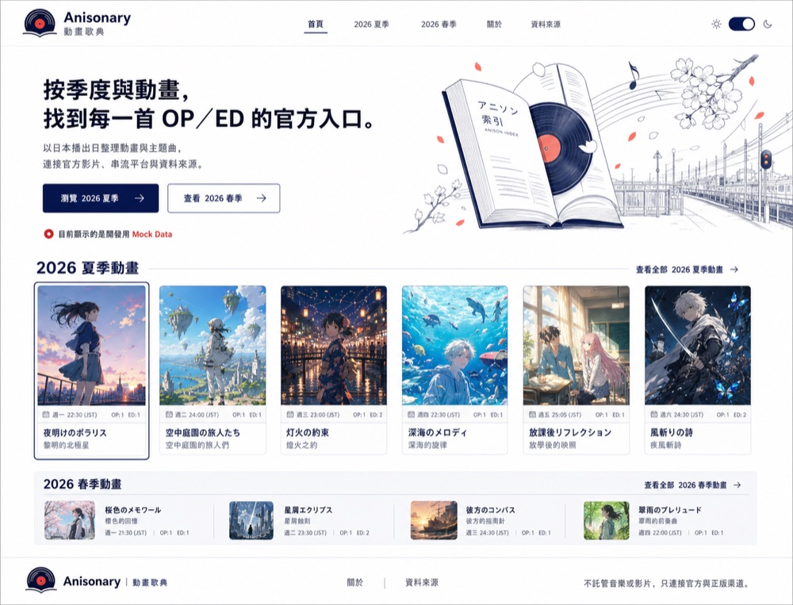
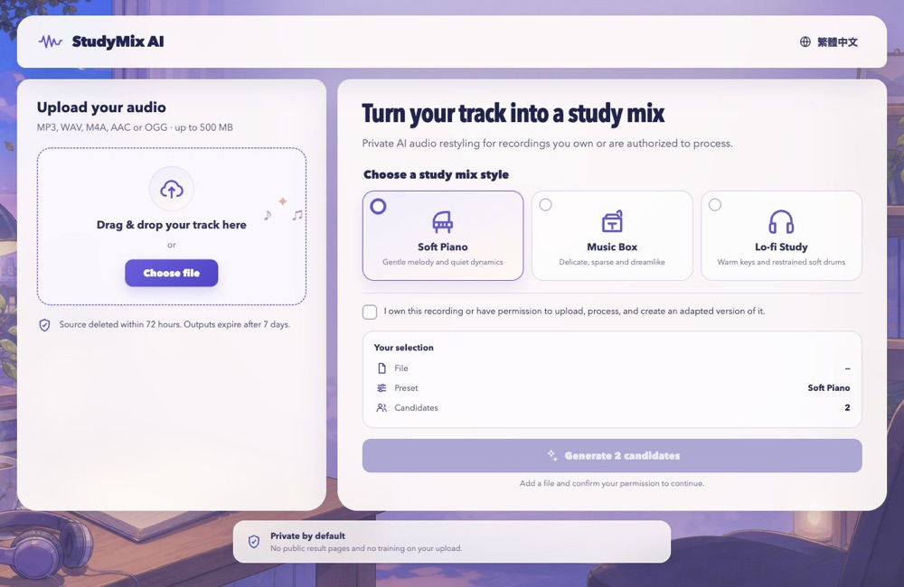
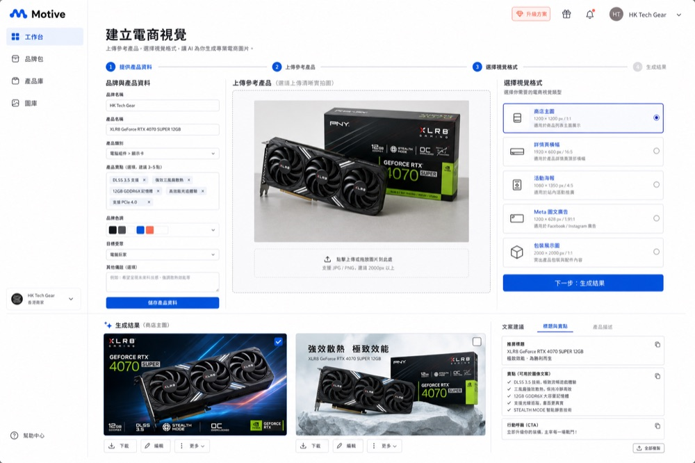

Ken Yeung
Hi, I’m Ken. I like turning ideas into small, useful web products. Lately I’ve been building tools for wallpapers, anime music, and study-friendly audio while learning more about cloud systems.
Learning by building, one project at a time.
Interests
- Cloud hosting
- Cross-platform tools
- Reliable systems
- Automation & AI
Selected projects


StudyMix AI
Private betaTurn authorised audio into study-friendly instrumentals in an invite-only workspace.
Access-gated · Real upload and generation disabled
Building with
- TSTypeScript
- RReact
- CFCloudflare
- AAstro
- GGit
Exploring
- Cloudflare Workers
- Private data workflows
- Audio & image tooling
- Web-based 3D
- Astro publishing
- Release reliability
Elsewhere
The stars are shining. The show goes on.
Currently building
Public projects I’m continuing to develop.
RigStage
Invite-only MVPA product catalogue, asset review, and 3D PC assembly workspace for computer merchants. It currently uses synthetic demo data; private uploads, live 3D providers, and full export remain disabled.
React · Cloudflare Access · D1 · Workspace-scoped